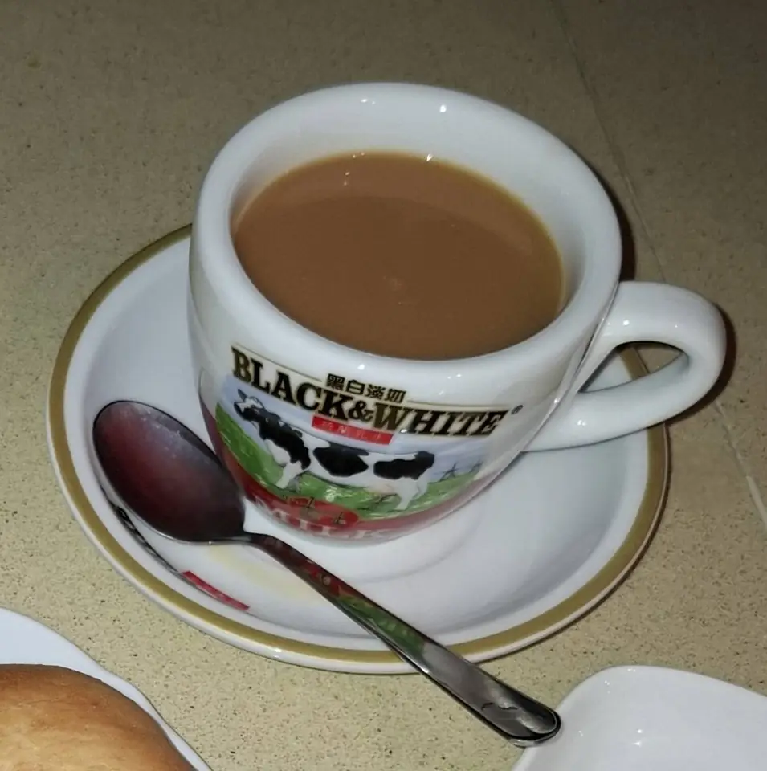
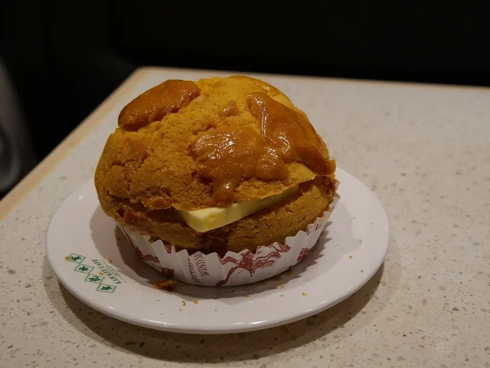

准备与贴士
出发前一晚过一遍清单。其余内容需要时再点开。
周五晚上的清单
勾选会记在这台手机的浏览器里。
最要紧的三件事
- 证件：港澳通行证加有效的赴港签注。深圳户籍和持居住证的人可以办“一签多行”。用其他证件的按对应规定。
- 八达通：港铁、叮叮车、天星小轮都刷它。iPhone 下载“旅客版八达通”App，用微信支付开卡充值；安卓用微信里的“八达通充值”小程序给实体卡充值；也可以到港铁站客务中心买实体卡。
- 现金：大多数商店能用支付宝和微信，但老茶餐厅、街边小吃、摊档常常只收现金。
吃
茶餐厅点餐小词典




| 你会听到 / 看到 | 意思 |
|---|---|
| 搭台（搭枱） | 和陌生人拼桌，很正常。 |
| 埋单 | 结账。多数店是拿着单子到门口柜台付。 |
| 常餐 / 快餐 / 特餐 | 固定套餐，含饮品。常餐一般是通粉或公仔面，加煎蛋、多士。 |
| 多士 / 西多士 / 奶油多 | 吐司 / 炸过的法式吐司 / 炼奶牛油吐司。 |
| 公仔面 / 通粉 / 意粉 | 方便面 / 通心粉 / 意大利面。 |
| 鸳鸯 | 咖啡兑奶茶。 |
| 茶走 | 奶茶不放糖和淡奶，改用炼奶。 |
| 冻柠茶、冻奶茶 | 冰的。冻饮一般比热饮贵两三块。 |
| 走冰 / 少冰 / 少甜 | 不加冰 / 少冰 / 少糖。 |
| 行街 | 打包带走。 |
- 茶餐厅一般不收服务费。坐下点菜的餐厅和酒楼通常加 10%，账单上写“加一”。
- 很多店不提供纸巾，自己带。餐厅不再提供一次性塑料吸管和餐具。
- 节奏快：坐下就点，吃完就走，不用觉得被怠慢。
街头小吃认一认

.jpg){kind=link}
- 咖喱鱼蛋：炸过的鱼丸泡在咖喱汁里，用竹签串着吃。
- 鸡蛋仔：蛋浆倒进蜂巢形的模子里烤，外脆里软。同一摊通常还卖格仔饼（夹花生酱、炼奶的华夫饼）。
- 烧卖：街头的是鱼肉烧卖，淋豉油和辣椒油。
- 碗仔翅：不是鱼翅，是粉丝、木耳、肉丝做的羹，加醋和胡椒。
- 肠粉：白肠粉切段，拌甜酱、麻酱、豉油、芝麻。
- 卤水串、生肠、墨鱼：蘸甜酱和芥末。
每样约 HK$15–40。旺角登打士街、豉油街一带最集中。
说话和规矩
几句用得上的粤语
| 粤语 | 大概怎么念 | 什么时候用 |
|---|---|---|
| 唔该 | ng-goi | 万能词：麻烦一下、借过、谢谢（别人帮了小忙）。叫服务员也用它。 |
| 多谢 | do-ze | 谢谢（收到东西、别人请客）。 |
| 几多钱？ | gei-do-chin | 多少钱。 |
| 埋单 | maai-daan | 结账。 |
| 呢个 | ni-go | 这个（指着菜单说）。 |
| 早晨 | zou-san | 早上好。 |
普通话在香港基本通用，店员大多听得懂。先说一句“唔该”，对方会更客气。
在香港要注意的规矩
- 车辆靠左行驶。过马路先看右边，路口地上写着“望右”“望左”。
- 扶手电梯靠右站。
- 港铁闸内不能吃东西、喝水，会罚款。
- 乱扔垃圾、随地吐痰定额罚款 HK$3,000。禁烟区很多，吸烟会被罚。
- 红绿灯要等。香港对行人乱过马路会开罚单。
- 拍照不要站到马路上，坚尼地城新海旁尤其要注意。
过关时不能带的东西
- 带进香港：电子烟和加热烟不能带（2022 年起禁止进口）。防狼喷雾、电击器、伸缩棍、弹簧刀在香港属于违禁武器。肉类、蛋类不能随身带入。
- 带回内地：鲜花、植物、泥土、生鲜肉蛋不能带。从港澳进境的居民旅客免税额度是 12,000 元人民币（2024 年 7 月起），以海关公告为准。
- 证件随身带，不要放进车上的行李里。
钱和天气
费用估算（每人）
| 项目 | 港币 |
|---|---|
| 跨境大巴 | $130（买到双程则 $105） |
| 天星小轮、叮叮车、港铁 | $16–25 |
| 早午餐 | $40–60 |
| 街头小吃（午饭） | $50–100 |
| 下午茶（可选） | $40–60 |
| 晚饭 | $60–120 |
| 合计 | 约 $300–500 |
不含购物。八达通充 $150 够用，其余备现金。
天气和穿着
周六预报（香港天文台 11 月 13 日 19:05）：大致多云，有几阵骤雨，初时雨势颇大并有狂风雷暴；日间骤雨减少，下午部分时间有阳光。气温 23–27°C，湿度 70–95%。
- 带折叠伞。短袖加一件薄外套，傍晚海边有风。
- 鞋要防滑，全天走 10 公里左右。
- 日落 17:40，约 18:05 天黑。